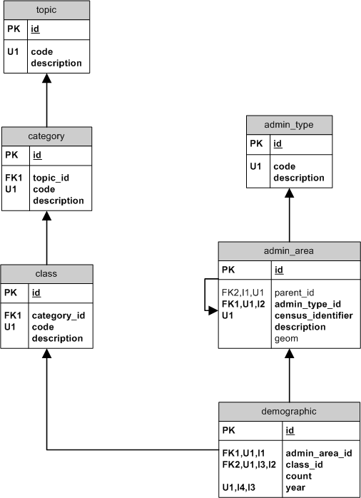

Census

Administrative hierarchy
Census data is provided as a collection of spread sheets, each defines the instances of the administration areas (geographies)
- Meshblock
- Area unit
- Ward (where applicable)
- Territorial authority
- Regional council
RC Regional Council
/ \
TA TA Territorial Authority
/ \
WA WA Ward
/ \
AU AU Area Unit
/ \
MB MB Meshblock
The adminstrative hierarchy is presented as a tree with each level of a specific adminstrative tyoe. Demographic data is assigned to the meshblocks only.
admin_type
Administrative types or levels in area hierarchy, eg. RC, TA
- id (SERIAL)
- code (CHARACTER(2))
- description (TEXT)
admin_area
An administrative area in the area hierarchy
- id (SERIAL)
- parent_id (INTEGER)
- admin_type_id (INTEGER)
- census_identifier (VARCHAR(32))
- description (TEXT)
Census information hierarchy
Census data is provided as a collection of spread sheets per topic. Each topic has a set of categories, each with it's own set of classifications.
TOPIC About People
/ \
CATEGORY CATEGORY Age in 5 year groups
/ \
CLASS CLASS 0 - 4 years, 5 - 9 years
About people:
- Census usually resident population count
- Census night population count
Based on census usually resident population count:
- Sex
- Age in five-year age groups
- Median age
- Years at usual residence
- Usual residence five years ago indicator
- Birthplace
- Years since arrival in New Zealand
- Ethnic groups – grouped total responses
- Languages spoken
- Māori descent
- Religious affiliation
Based on census usually resident population count aged 15 years and over:
- Cigarette smoking behaviour
- Legal marital status
- Social marital status
- Tenure holder
- Number of children born
- Highest qualification
- Study participation
- Sources of personal income – total responses
- Total personal income
- Median personal income
- Work and labour force status
- Unpaid activities – total responses
Based on census usually resident population count aged 15 years and over and employed:
- Status in employment
- Occupation – ANZSCO major group
- Occupation – ANZSCO major group, workplace address
- Occupation – NZSCO99 major group
- Occupation – NZSCO99 major group, workplace address
- Industry – ANZSIC06 division
- Industry – ANZSIC06 division
- Industry – ANZSIC96 v4.1 division industry – ANZSIC06 division
- Industry – ANZSIC96 v4.1 division
- Hours worked in employment per week
- Main means of travel to work
About families:
- Total families (in private occupied dwellings)
Families in private occupied dwellings:
- Family type
- Total family income
- Median family income
- Sources of family income – total responses
About households:
- Number of usual residents in household
- Mean number of usual household members
Households in private occupied dwellings:
- Total households
- Household composition
- Total household income
- Median household income
- Sources of household income – total responses
- Tenure of household
- Number of motor vehicles to which the household has access
- Access to telecommunications – total responses
Households in rented private occupied dwellings:
- Sector of landlord
- Weekly rent paid
- Mean weekly rent paid
- Median weekly rent paid
About dwellings:
- Total private occupied dwellings
- Dwelling record type (for occupied dwellings)
Private occupied dwellings:
- Number of rooms
- Number of bedrooms
- Mean number of bedrooms
- Median number of bedrooms
- Fuel types used to heat dwelling – total responses
topic
Census topics, eg. about people, households, etc.
- id (SERIAL)
- code (VARCHAR(32))
- description (TEXT)
category
Category for a Census topic, eg. Age in 5 year groups
- id (SERIAL)
- topic_id (INTEGER)
- code (VARCHAR(32))
- description (TEXT)
class
The classes of a topic category, eg. 0 - 4 years
- id (SERIAL)
- category_id (INTEGER)
- code (VARCHAR(32))
- description (TEXT)
demographic
The instance of a statistic of the human population. This table holds the count data per class (a cell in the census spreadsheets)
- id (SERIAL)
- admin_area_id (INTEGER)
- class_id (INTEGER)
- count (INTEGER)
- year (SMALLINT)
{kind=link}